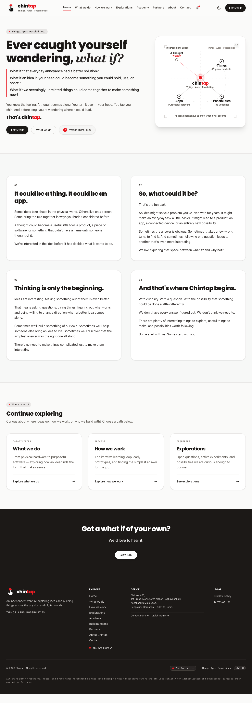
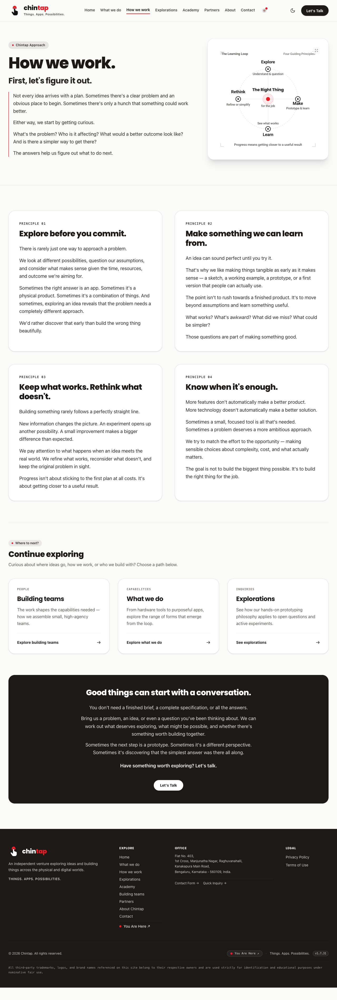
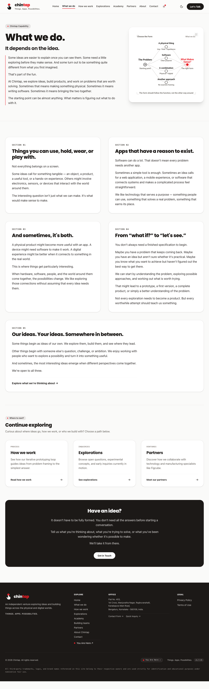
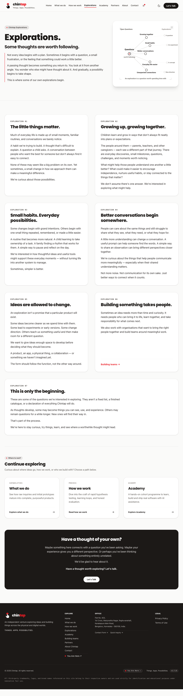
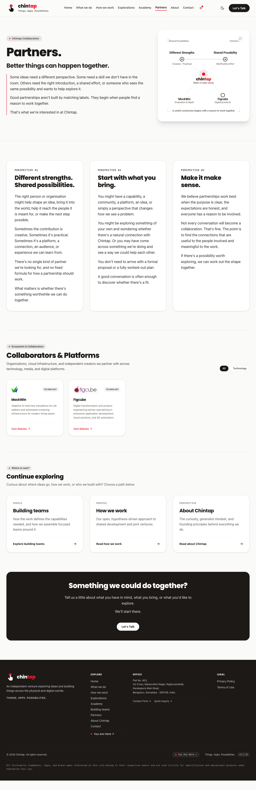
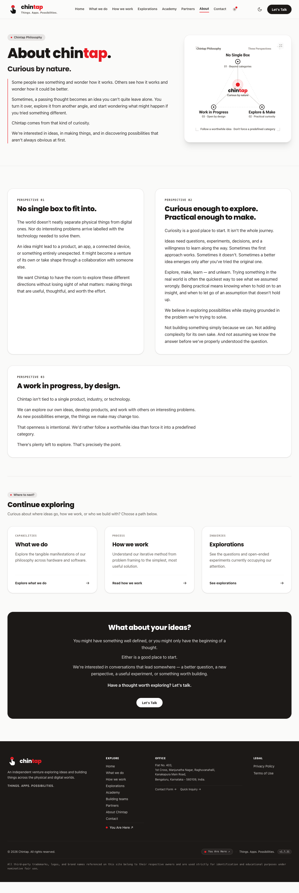
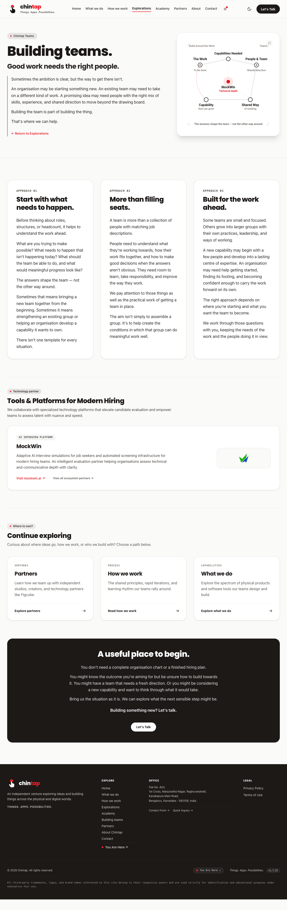

200
Depth 0
https://chintap.com/ ↗
Chintap | Things. Apps. Possibilities. — Exploring Ideas & Building Useful Things

200
Depth 1
https://chintap.com/how-we-work ↗
How We Work | Exploring, Prototyping & Building What Matters | Chintap

200
Depth 1
https://chintap.com/what-we-do ↗
What We Do | Physical Products, Purposeful Apps & Connected Possibilities | Chintap

200
Depth 1
https://chintap.com/explorations ↗
Explorations | Some Thoughts Are Worth Following | Chintap

200
Depth 1
https://chintap.com/partners ↗
Partners | Better Things Can Happen Together | Chintap


200
Depth 1
https://chintap.com/about ↗
About Chintap | Curious by Nature — Things. Apps. Possibilities.

200
Depth 1
https://chintap.com/building-teams ↗
Building Teams | Good Work Needs the Right People | Chintap

200
Depth 1
https://chintap.com/contact ↗
Let's Talk | Contact Chintap — Share Your Ideas & Inquiries